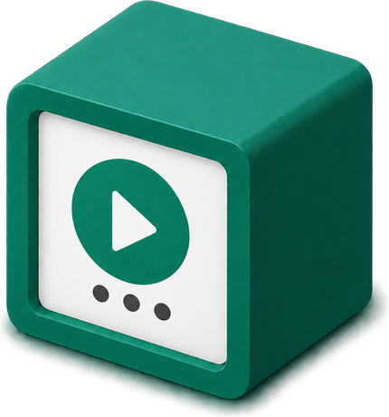
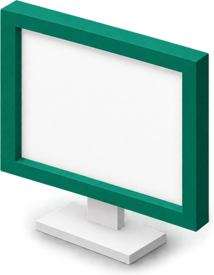

BigQuery

one Cloud Run Job
runs every step, every night

reporting window, restated nightly
Google Ads
typed history
validated marts
validation
8 reporting tables
Looker Studio
run report
what this run could prove